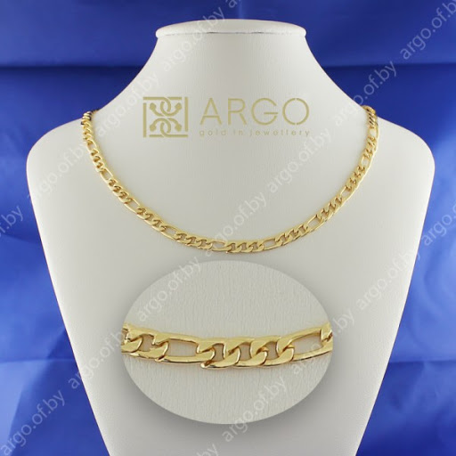

Ланцюг для чоловіків «Арго»
Ланцюг Арго виконаний в красивому подвійному панцирному плетінні і має справжнє золоте покриття,
нанесене гальванічним методом, що дозволяє захистити виріб від передчасного стирання і подряпин.
Підходить буквально до всього!
Не вимагає неодмінного альянсу з певним видом одягу
Чоловічий ланцюжок «Арго»
Це прикраса, яке допустимо носити в будь-якій обстановці, а також поєднувати з одягом в будь-якому стилі.
Цей аксесуар не буде конкурувати з наручним годинником або браслетом, які ви, можливо, звикли носити.

Золотий ланцюжок Арго!
Це оригінальне і добротне виріб стане вдалим внеском у побудову вашого іміджу.
Арго!
Стильний чоловічий ланцюжок арго,
виготовлений з ювелірної нержавіючої сталі 316L, що не окислюється і не викликає алергічну реакцію.